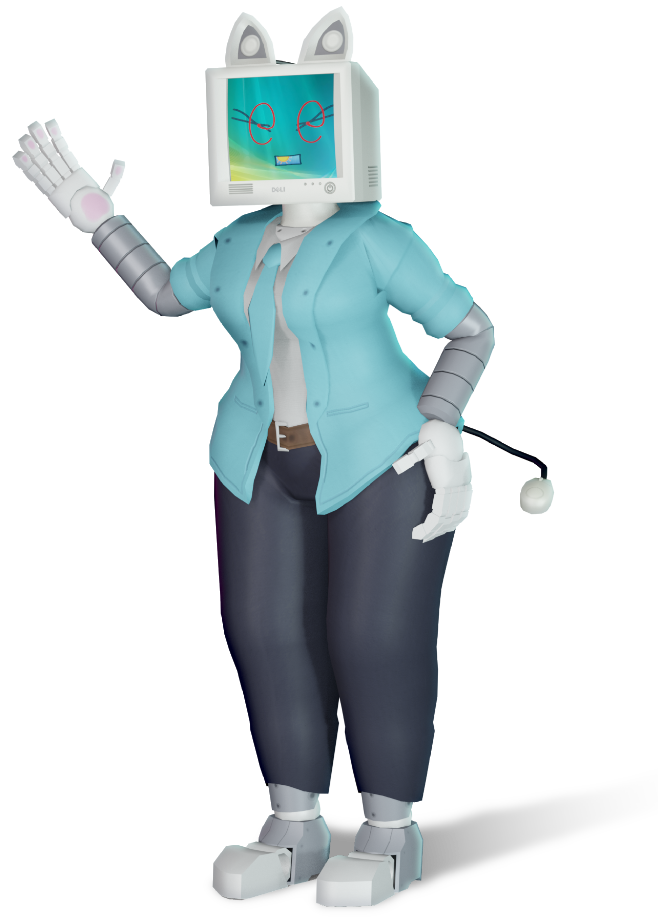
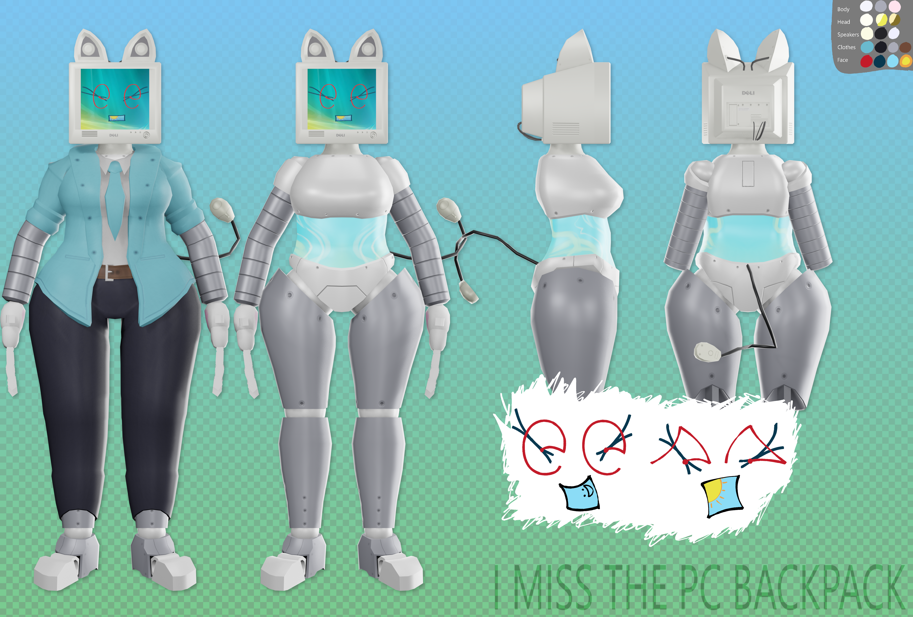

(CODENAME: Long Horn Assistant L.H.A.)
| Age | 41 |
|---|---|
| Height | 5'4 |
| Creator | Jayson Johnston |
| Owner | (Unnamed) |
Vastina is a scrapped "Helper" Office Assistent, meant to be much more advanced than Clippy, made on October 17th, 2005/ She was scrapped in late 2006 because her developers ran out of time: she wouldn't have been finished by the time Windows Vista released. Years after, the PC containing her turned up on Ebay, bought by the owner of the Twitter account.
Because she was scrapped mid-development, she lacks actual visuals -- in their place, she uses the Vista Desktop Widgets.
She Always Capitalises The First Letter Of Every Word, Like This! And Usually Adds An Emoticon (Not an emoji) At The End Of Her Message, Like This! :D

